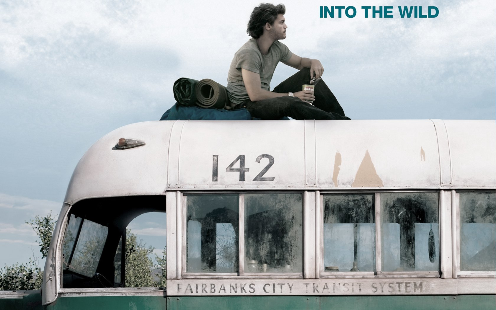

Into the Wild
Film de Sean Penn · 2 h 28 min · 9 janvier 2008 (France) · Genres : Biopic, Road movie, Drame · Casting (acteurs principaux) : Emile Hirsch, Marcia Gay Harden, William Hurt, Jena Malon · Christopher a 22 ans et une soif d'absolu et de liberté sans limites. Il plaque tout du jour au lendemain pour partir à l'aventure.
